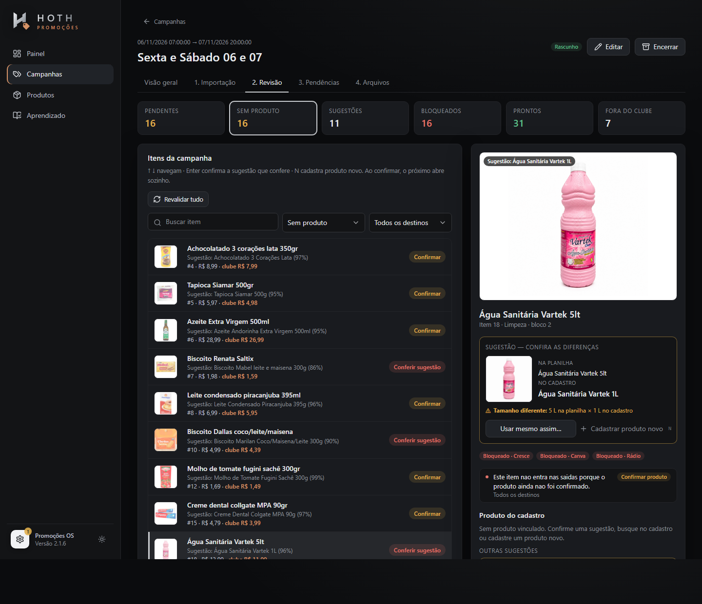

Manter a planilha que a equipe já usa
A planilha enviada à agência virou a entrada do sistema. A mudança não exigiu nenhum trabalho novo de quem já fazia o panfleto.
Como um processo manual, repetido duas vezes por semana e sujeito a erro, foi redesenhado em uma linha de montagem com dados, indicadores e controle preventivo. O tempo liberado foi realocado para o financeiro.
Clube/Cresce_06_e_07.xlsxCanva/Canva_Mercearia.xlsxRádio/Radio_06_e_07.xlsxpor campanha completa. Antes, de 2 a 4 horas: redução de até 94%.
dos itens do clube sem intervenção em outubro. Em julho, 56%.
de produtos novos para cadastrar por mês, de julho a outubro.
notas por mês lançadas no financeiro com o tempo liberado.
Duas campanhas por semana, com média de 50 produtos cada, precisavam chegar ao clube de ofertas, às artes da agência e ao rádio. A mesma informação era redigitada em cada canal.
O gargalo era a redigitação, e o controle dependia só da atenção de quem digitava. Quase toda campanha tinha algum erro manual.
Uma fonte única de dados: a planilha que já existia alimenta os três canais. A automação cuida do que é conhecido e a pessoa decide o que tem dúvida.
De 4 a 8 horas para 30 minutos por semana, sem divergência nos arquivos comparados e com o tempo realocado para notas e controladoria.
Cada oferta do Mendes precisa chegar ao aplicativo de clube, às artes da agência e ao rádio. A informação era uma só, mas era redigitada em cada canal, e cada redigitação era uma nova chance de erro.
Quase toda campanha tinha erro de sub-código ou código secundário faltando no produto.
Descrição ou preço digitados errado na arte do panfleto.
Preço ou produto com a gramatura errada.
Item esquecido, produto trocado ou categoria errada, sempre descobertos tarde.
A planilha enviada à agência virou a entrada do sistema. A mudança não exigiu nenhum trabalho novo de quem já fazia o panfleto.
Um vínculo errado publica o preço no produto errado. Por isso nenhum produto novo entra sem cadastro humano, mesmo custando alguns segundos.
O sistema novo rodou em paralelo, sobre cópias dos dados, até gerar os mesmos arquivos do processo já validado pela loja.
Taxa de automação, cadastros novos e decisões por semana mostram se o processo está melhorando, com dados da própria operação.
Telas reais do aplicativo, com a campanha Sexta e Sábado 06 e 07.
O preço publicado é um compromisso com o cliente. A conferência deixou de acontecer depois do erro e passou a impedir o erro na hora da decisão.
É a mesma regra do aplicativo, rodando aqui. Os exemplos são casos reais. Edite os nomes à vontade.
Na primeira campanha feita na versão nova, em novembro, o processo falhou. O tratamento dessa falha mudou o sistema.
Na campanha de 06 e 07, sugestões parecidas foram confirmadas: Água Sanitária 5 L como 1 L e Omo 1,6 kg como Ace 800 g.
A tela não deixava clara a diferença entre o item da planilha e a sugestão do cadastro.
Os itens foram corrigidos no Cresce e foi confirmado que nenhuma descrição errada havia sido aprendida.
A diferença agora aparece escrita, com foto, e impede a confirmação direta. Os pares reais viraram caso de teste permanente.

Cada cadastro e cada descrição aprendida reduzem o trabalho das campanhas seguintes. Indicadores extraídos da base real da operação.
Vínculo automático por nome ou descrição aprendida
Novembro parcial, com 2 campanhas até 09/11.
Quanto mais o catálogo cresce, menos há para cadastrar
Junho e julho formaram a base do catálogo. Novembro parcial.
| Etapa | Processo manual | Promoções OS |
|---|---|---|
| Campanha completa | De 2 a 4 horas | 15 minutos |
| Semana com 2 campanhas | De 4 a 8 horas | 30 minutos |
| Atualizar o Cresce | Produto a produto, cerca de 100 por semana | 1 planilha de lote gerada |
| Montar a campanha | Copiar para outro modelo e classificar cada item | Soltar o panfleto: menos de 1 s para importar |
| Categoria e bloco | Digitados a cada campanha | Lidos das seções do panfleto |
| Código e foto | Buscados no ERP | Uma vez, no cadastro |
| Decisões na semana medida | Todos os produtos, um a um | 14 decisões em 109 itens |
| Arquivos dos 3 destinos | Trabalho separado em cada ferramenta | 4,1 s, direto na pasta da campanha |
O ganho não ficou só no indicador. As horas liberadas foram realocadas para atividades do financeiro.
devolvidas por semana.
notas por mês lançadas com esse tempo.
Maior foco em outras tarefas de controle do financeiro, antes disputando tempo com a digitação de promoções.
O sistema só entrou em operação depois de gerar o mesmo resultado do processo que já estava validado pela loja.
em valores e formatação nos arquivos de 4 campanhas reais, comparados célula a célula.
lidos em 59 planilhas históricas de panfleto, sem perder nenhuma linha com preço.
automatizados cobrindo importação, concorrência, retomada, exportação e restauração.
gerações simultâneas concluídas, sem travamento do banco de dados.
ativos com foto local e publicada, prontos para o clube.
do histórico migrado a partir de cópia: 610 descrições aprendidas, com a origem inalterada.
Hugo definiu o problema, as regras, os critérios de aceite e a validação. O desenvolvimento foi dirigido com inteligência artificial (Claude Code), e cada entrega foi testada contra dados reais da operação.
Mapeou o fluxo, achou a causa do retrabalho e redesenhou a operação sem interromper a rotina.
Definiu indicadores e mediu a evolução sobre milhares de registros reais.
Criou controle preventivo, trilha de decisões e comparação célula a célula.
Converteu tempo em capacidade para notas e controladoria.